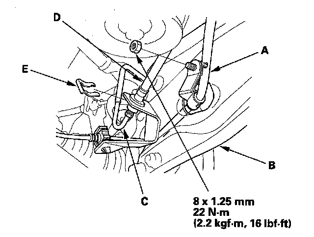
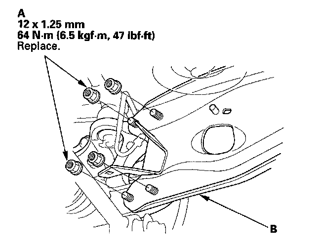
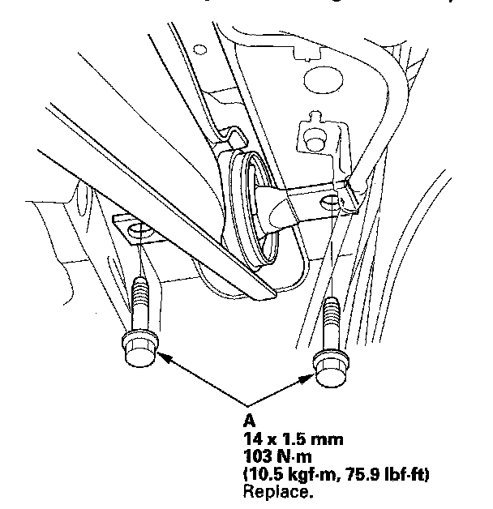

Trailing Arm: Service and Repair
Trailing Arm Removal/Installation1. Raise the rear of the vehicle, and support it with safety stands in the proper locations.
2. Remove the rear wheel.
3. Remove the parking brake cable (A) from the trailing arm (B).

4. Disconnect the brake line (C) from the brake hose (D) then remove the retaining clip (E).
5. Disconnect the parking brake cable from the parking brake lever.
6. Remove the flange nuts (A) from the trailing arm (B).
NOTE: Use new flange nuts during reassembly.

7. Remove the flange bolts (A) from the trailing arm, then remove the trailing arm.
NOTE: Use new flange bolts during reassembly.

8. Install the trailing arm in the reverse order of removal, and note these items:
^ First install all the suspension components, and lightly tighten the bolts and nuts, then place a floor jack under the lower arm, and raise the suspension to load it with the vehicle's weight before fully tightening the bolts and nuts to the specified torque values.
^ Before installing the brake disc/drum, clean the mating surface of the hub bearing unit and the inside of the brake disc/drum.
^ Before installing the wheel, clean the mating surface of the brake disc/drum and the inside of the wheel.
^ Fill the master cylinder reservoir to the MAX (upper) level line, and bleed the brake system. Check for a leak at the brake line to the brake hose, and retighten it if necessary.
^ Check the wheel alignment, and adjust it if necessary.